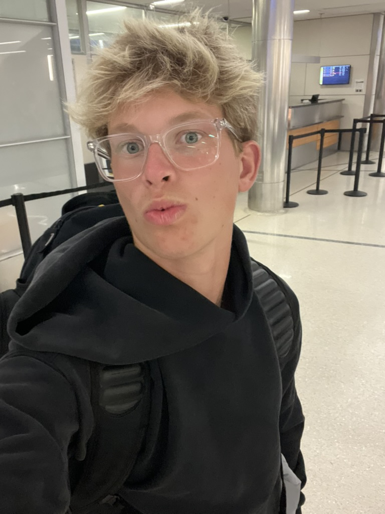

Independent photographer · Wisconsin
Light, in its
quietest form.
A considered study of place, motion, and the people who move through both.
View selected workWisconsin, United States · 2026
Web Design
Professional websites built for growing businesses.
Alongside photography, I create modern websites that help businesses build a professional online presence. Every project is designed with performance, search engine optimization, automation, and clean user experiences in mind.
Explore Web Design

The photographer
Images with a sense of arrival.
For Isaac Motl, the camera is a way to slow down. From storm systems over the high desert to an athlete's final quiet moment before competition, his work follows the details that stay with you.
More about Isaac